译文｜字号无用，是否有解？
如果你在自用的文本编辑器里设置 "font_size": 32，会是什么效果？如果你也思考过这个问题，那为最好；如果没有，且听我慢慢道来。
要想知道答案，不如上手试试。我自用的编辑器是 macOS 上的 Sublime Text 4:
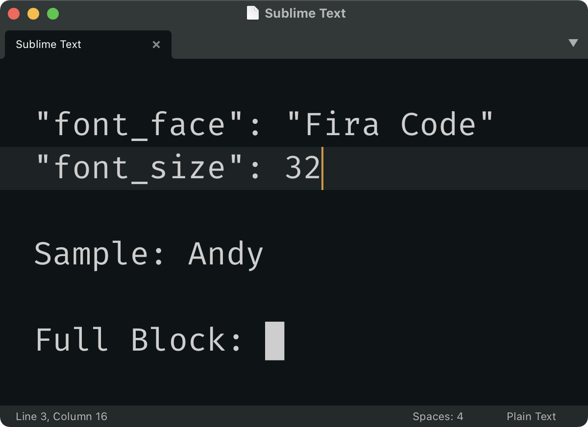
实际测量文字大小会发现，「32」这个数字踪迹全无：
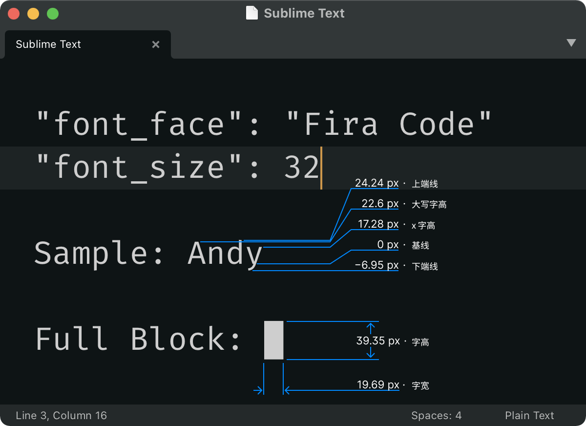
可以看出，32 既非字高（char height），也非字宽（char width），不是大写字高(cap height）或 x 字高（x-height），更不表示上下端线（ascending / descending line）1的位置。这是为什么？
从「点」开始
首先，font-size 规定的并非像素数，而是点（point / pt）数。点脱胎自现实世界中的字体排印，是一个物理尺度，1 点等于 1/72 英寸（约 0.353 毫米）。之所以使用点作为字号单位，是为了用现实世界中的物理单位度量文字大小，而无需考虑屏幕分辨率等无关紧要的细节。所以，如果我想让文字高度为 2 英寸，我只需将字号设置为 144 pt。
但实际操作却是另一番光景。例如，macOS 从来都是用 72 PPI 的像素密度把点数换算为像素数。如果在 32 寸 和 24 寸显示器上同时显示 1080p 分辨率下 100 pt 的内容，macOS 会让两者的像素大小相等，实际大小却并不相等，可谓南辕北辙。
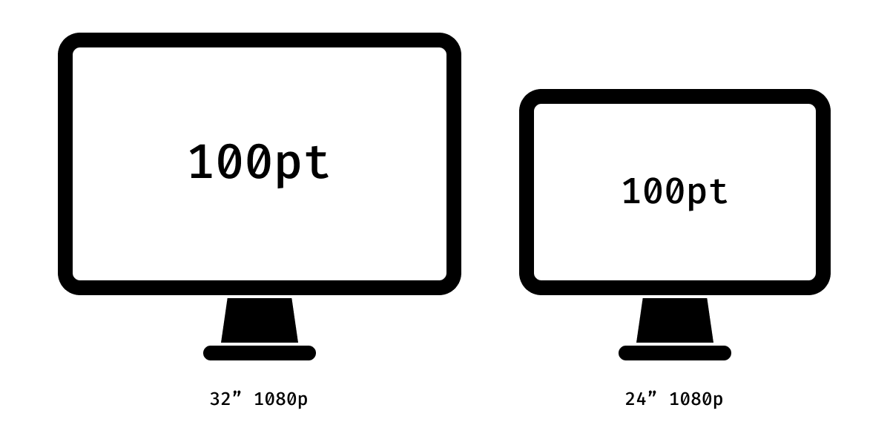
为什么是 72 呢？这是因为，Mac 最早搭载的显示器，像素密度就是 72 PPI。这样一来，文字在屏幕上的显示大小就等于印刷出来的实际大小，不可谓不方便。当然，Mac 显示屏的像素密度自那之后不断攀升，但这个换算关系得以保留2。
作为「相爱相杀」的好伙伴，Windows 使用的则是 96 PPI，而非 72 PPI。至于背后原因，当然不是因为 Windows PC 屏幕更好（其实并不好3），而是因为 72 个像素不足以渲染出清晰可辨的文字。那既然如此，干脆把文字放大 1/3 得了呗。
事实上，Windows 也确实是这么做的。这就导致即使现在，Windows 上的 16 pt 依然比 macOS 上的 16 pt 大 1/3。笑了。
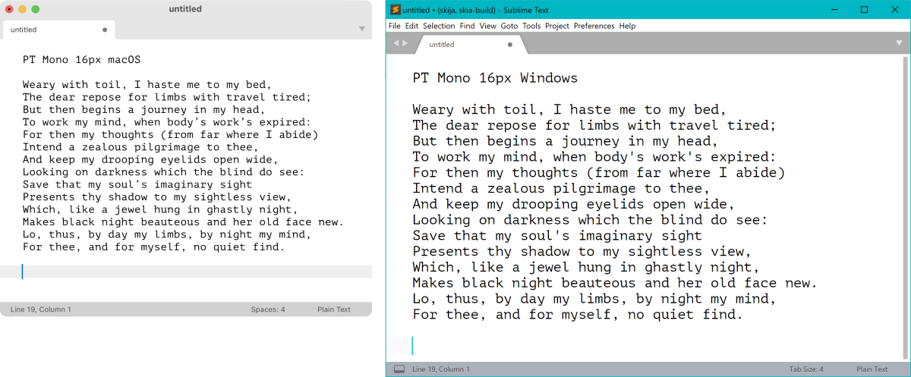
P.S. VS Code 似乎将 editor.fontSize 的值直接视为像素数。这算是开了个好头！
Em 空格
由上可知，如果用户将字号设置为 32 pt，macOS 和 Windows 会分别显示 32 px 和 43 px 大小的文字。但即使如此，文字大小也并不是 32 px 或者 43 px。这是因为 font-size 规定的是所谓的「em」，也即传统活字印刷中每个活字的高度。至于为什么叫 em，那是因为「m」这个字母的活字正好是正方形，因此，「m」的宽度 == 活字的高度 == 1 em4，就这么简单！
而在数字字体中，em 外框（em square）则指：
[…] a grid of arbitrary resolution that is used as the design space of a digital font. —— Wikipedia: em(typography)
……固定分辨率的方格，用于数码字体的设计。—— 维基百科：em（字体排印学）
……任意分辨率的方格，规定了设计数码字体所用的空间。——自译
也就是说，如果我打开 Fira Code，画一个 em 外框，它跟任何东西都对不上。
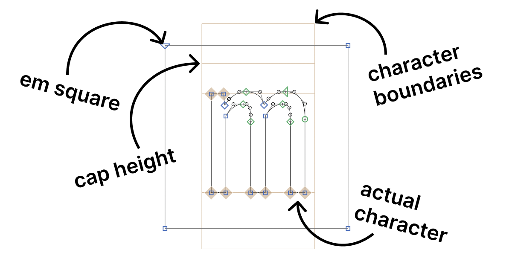
简而言之，这个外框才是你设置字号的时候，实际改变的东西。如果你将字号设置为 32 pt，那这个外框就会变成 32 px 或 43 px 高 / 宽。可惜这个外框一来并不可见，二来与字体的任何元素都不对应。
问题所在
当我说「em 的大小是任意指定的，与字体的任何元素都不对应」时，我可不是在夸张，而是事实本来如此！这就意味着，同一字号的不同字体，观感上大小会截然不同。比方说，当我把这两款不同字体的 em 外框调整至相同大小（也即字号相同），m 的高度可是大相径庭：
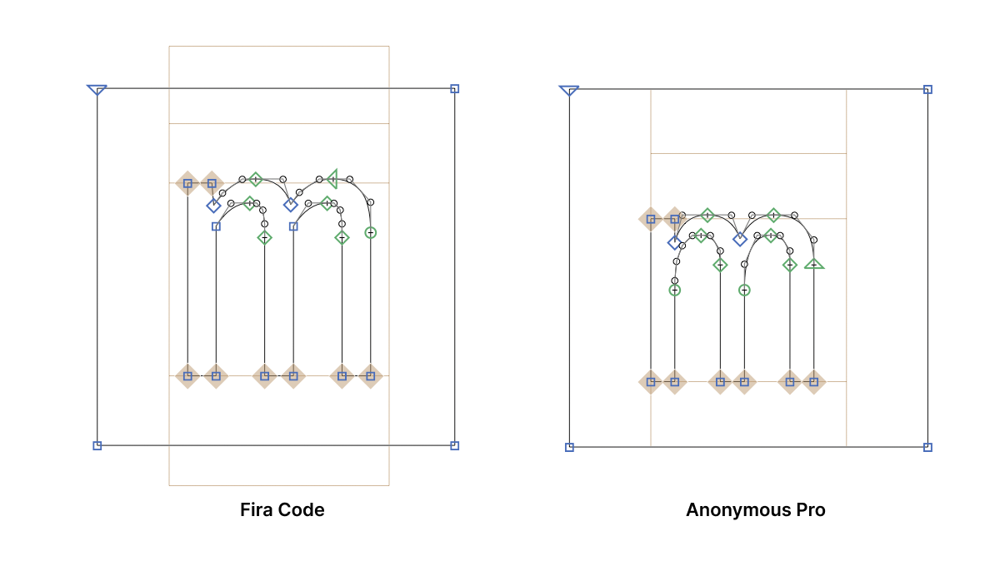
再举一例，图中这些字体的文字都是 22 pt：
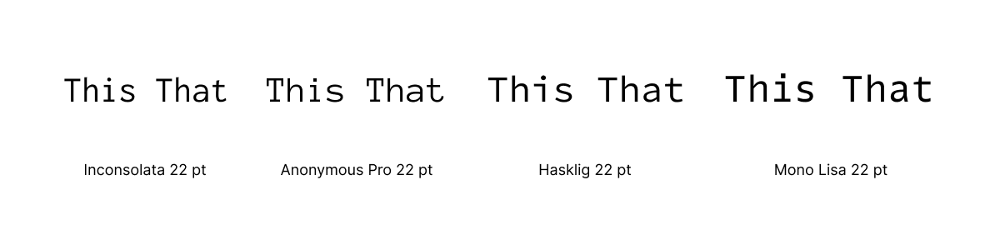
总结一下，字号这个尺度有以下问题：
- 难以预测：设置的结果完全无法预料。16 pt 到底等于多少像素？
- 不实用：想要的结果永远得不到。想要 13 px 高的文字吗？有梦是好事。
- 不连续：换个字体，不改字号，文字可能变大，也可能变小。
- 因操作系统而变：同一份文档，换个操作系统打开，显示的效果也会不一样。此外，编辑器的配置文件也不能跨系统共享。
解决之道
为今之计，解决方法有二：
- 指定大写字高，而非 em 外框的大小；并且
- 以像素作为指定大小的单位。
一般来说，大写字母是界定文字块边界的参考系。因此，把控制文字大小的尺度定为大写字高，而非其他什么任意指定的参数，就合理多了。
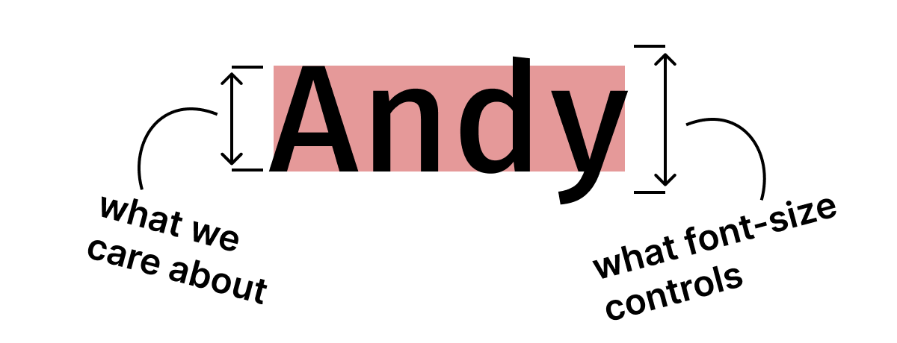
下面这几款字体的字号都一样：
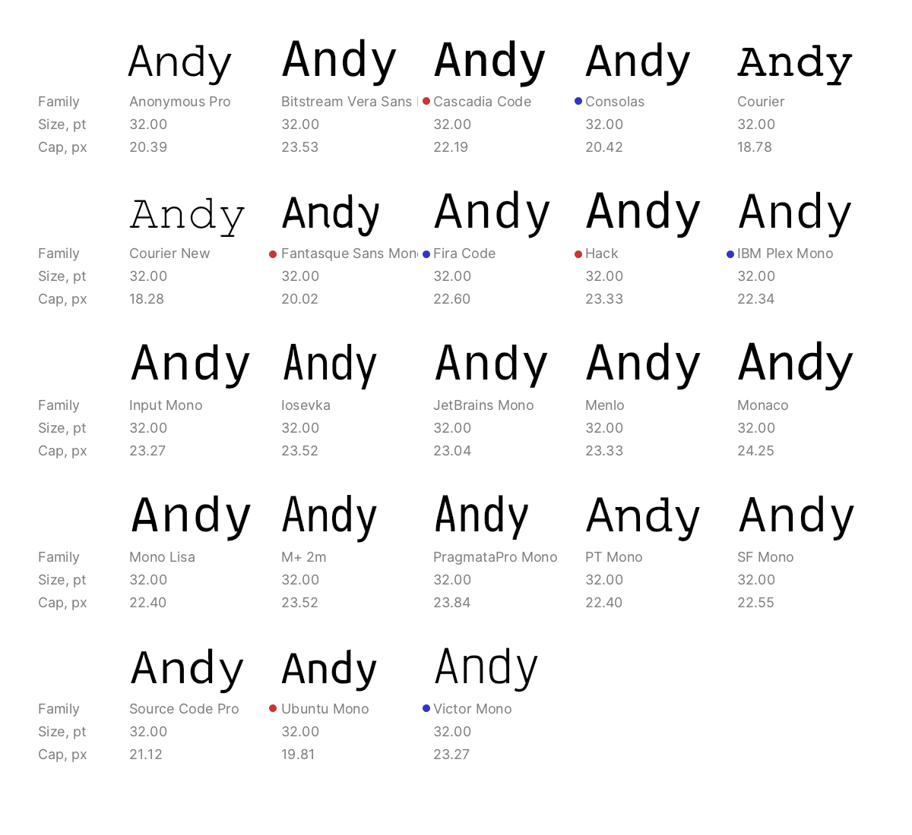
而下图是同样的字体，字号却各不相同，以确保大写字高一致：
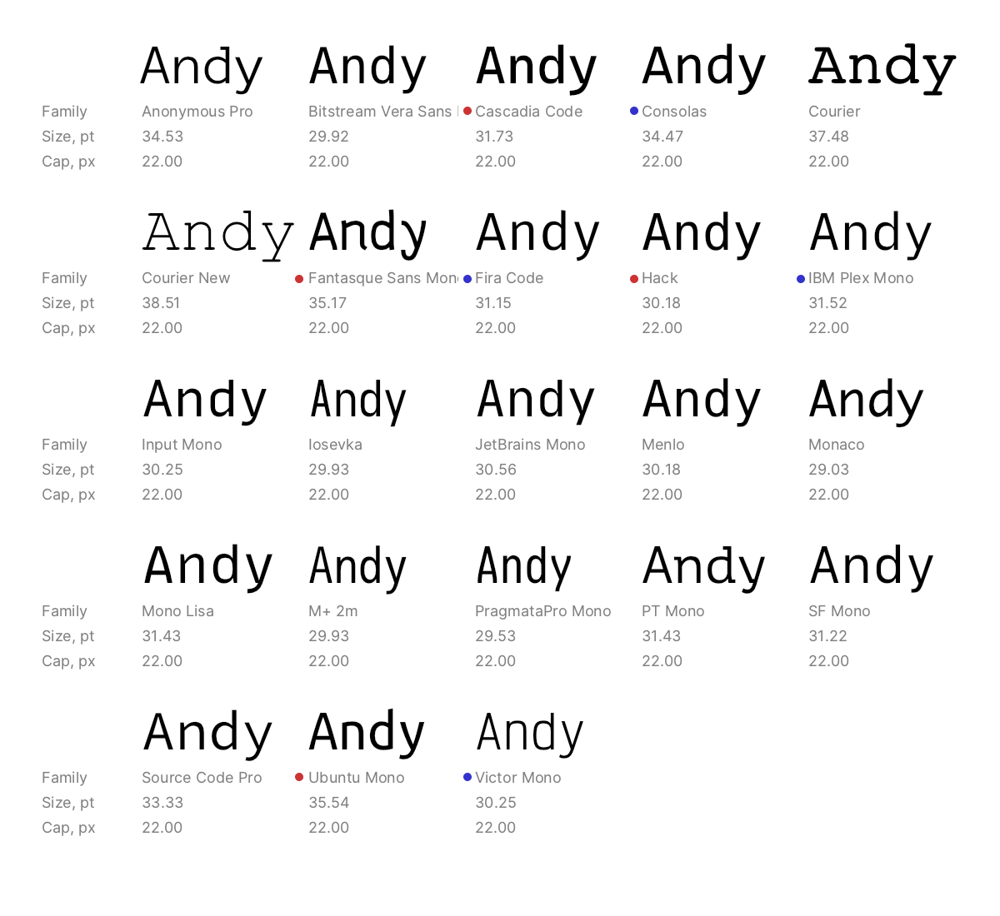
起码我个人觉得，后者看起来更统一。（试比较 Cascadia 和 Consolas；Hack 和 IBM Plex Mono；Ubuntu Mono 和 Victor Mono。）
再谈行高
既然都说到这儿了，再把行高的问题也解决了如何？不必担心，我会很快搞定。
首先，各家编辑器在行高这个问题上可以说是百花齐放、各行其是：
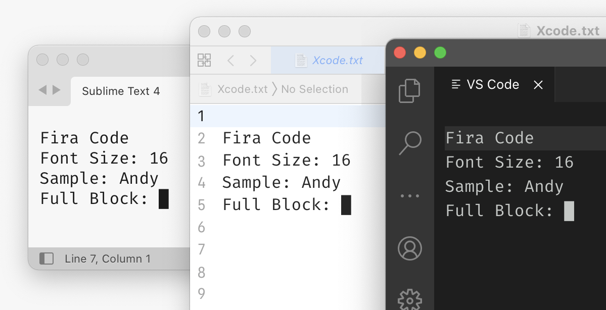
为什么会这样？行高的问题在于，其计算标准同样是字符的抽象边界：
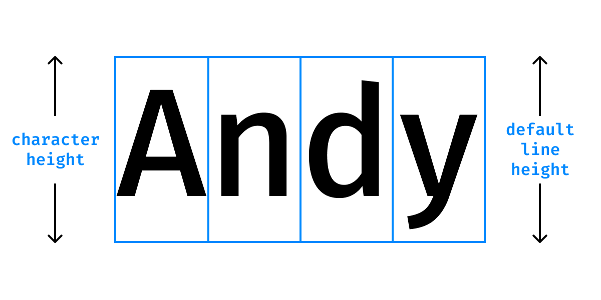
这个传统承袭自活字印刷时代。毕竟，一行的高度不可能低于字面本身：
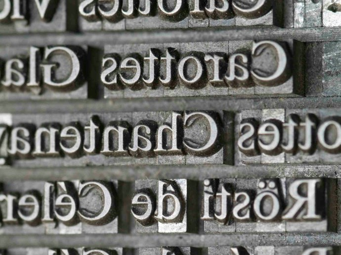
但数字字体设计还照此操作，可就行不通了。和字号的情况相同，字符上下留空的大小可说是千人千面，十分随意。有的上下留空非常富裕，有的则只够放下上升部和下降部。
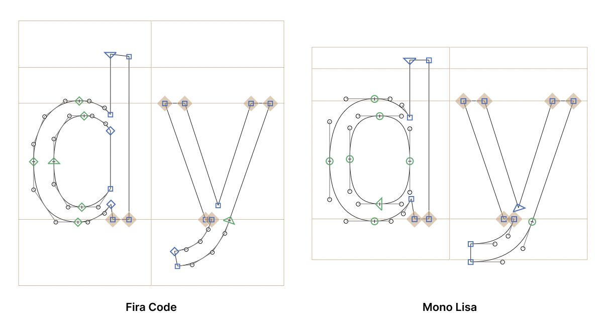
而即便是后者这样留空刚刚好的字体，也并不理想。上升部和下降部都是字体向外延伸的部分，并不影响我们对文字边界的观感。诚然，技术上讲，适宜的行高应当妥善容纳上升部和下降部，确保二者不重叠相交。但从美观的角度来说，这么紧密的行距值得商榷。
总而言之，虽然设计师在设计字体时有充足的空间放置字符的边界，但保持行高一致也就成了空中楼阁。
预测行高
解决这个问题最合理的办法，就是将行高直接设定为固定的像素数，忽略一切与字体相关的参数。或者，行高也可以设为大写字高乘以一个百分比。但无论如何，都不要与 font-size 或「自动」行高扯上关系！
还有很重要的一点，就是永远不要把行高设定为行与行之间的空白（即活字排印中的行间距 [leading]）。如若不然，不同的文字大小就会打乱段落的节奏：
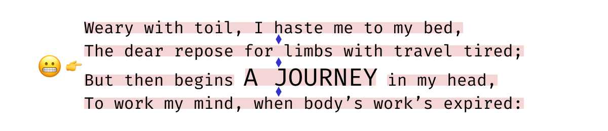
相反，行高应设定为基线之间的距离：
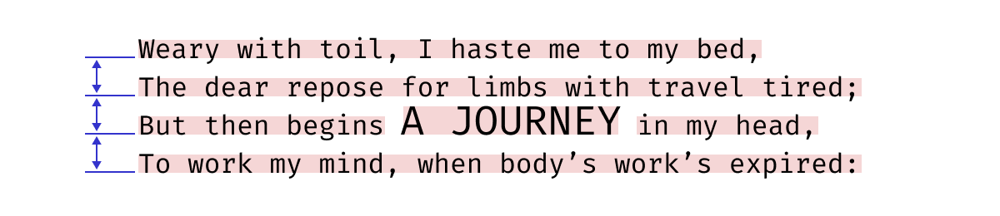
此外，我也不认为所谓的「默认行高」是什么好东西。这个数值基本上就是按照字体设计师个人的喜好来，却要强加于所有用户的所有使用场景。默认行高可以是任意数值（而事实上也确实够「任意」的），但「大写字高的 200%」则顾名思义，就是大写字高的 200%。
总结一下，如今的现状是，换一款字体，行高就会变成不知道什么样子：
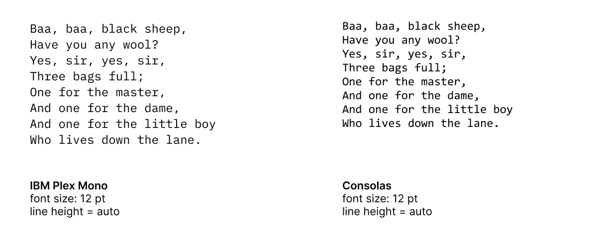
而我理想中的状况是，换一款字体，每一行的位置依然固定不变：
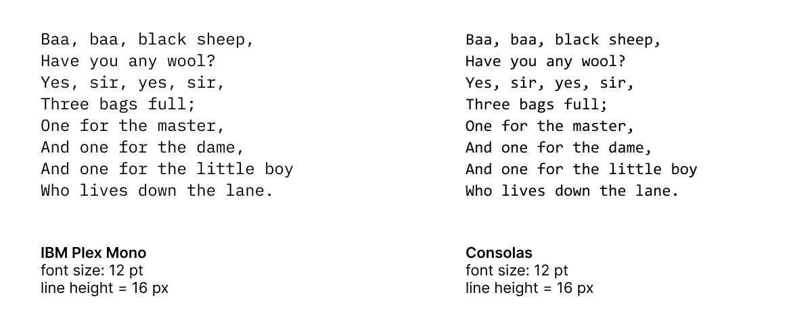
换个角度一想，我们身处计算机时代，却在字体上还保留了如此多排印时代的陈规旧矩，也是够绝的。
总结陈词
我如上种种主张，都是为了满足一个非常简单的使用场景：
- 可以一次性配置编辑器的字号和行高；
- 可以尝试不同的字体；
- 而不需要每次换字体都重新配置字号和行高。
就像这样（大写字高和行高完全一致）：
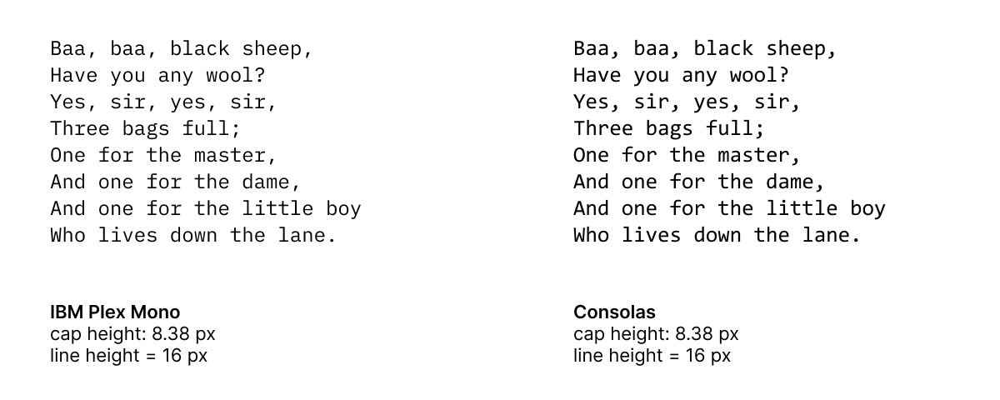
而我理想中的 UI 则是：
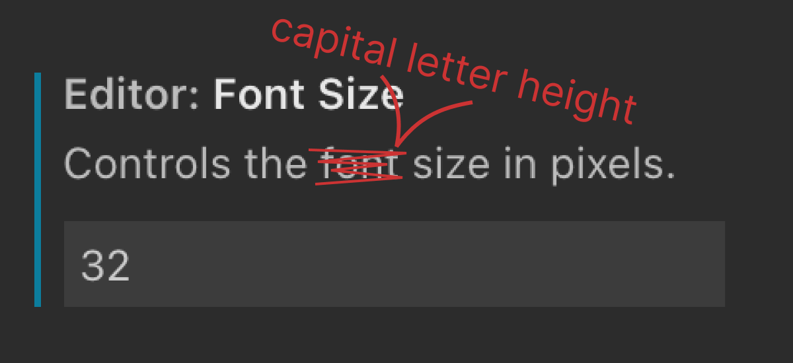
其实还有一个使用场景，就是以确定、可靠的方式，将按钮中的文本居中。这在网页显示上是老大难了，但最近连 macOS 都犯了同样的毛病：
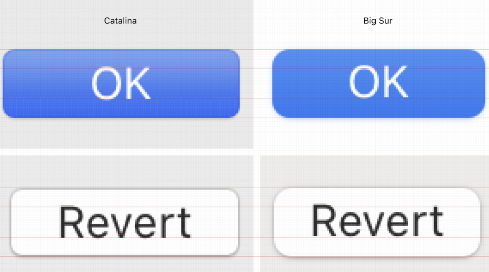
网页上用什么字体往往超出控制，又恰恰没有信得过的工具来对齐文本，这怎么想都是一项重大疏失。
参考链接
- Getting to the bottom of line height in Figma。Figma 尝试在预期效果和网页的实际工作原理之间找到一个折中方案。
- Deep dive CSS: font metrics, line-height and vertical-align。这篇文章详细介绍了字体和 CSS 行高算法的工作原理。
- Capsize 这个 JS 库现在就能在 web 端的重重限制之下，实现我在文中描述的效果。
- Leading-Trim: The Future of Digital Typesetting。这篇文章介绍了
leading-trim（相当于大写字高）如何解决上述问题。
欢迎将您的想法、评论、意见、建议发送至 harveyjanson@icloud.com，请注明「讨论」字样，我会尽量回复。
- 1.原文使用 ascender / descender，指西文向上或向下突出的部分，中文一般称「上升部 / 下降部」。——译者注 ↩
- 2.Mac 采用高分屏后，屏幕显示以逻辑分辨率为准。此时，72 PPI 中的「72」为逻辑像素数，而非屏上的实际像素数。关于 px、pt、ppi，可参阅 从第一代 iPhone 细数到 iPhone 12，iPhone 屏幕尺寸进化历程背后的 app 设计哲学；该文对于「点」的解释应批判看待。——译者按 ↩
- 3.作者个人观点。——译者注 ↩
- 4.作者此处的观点应批判看待。参见 「中西之别」重考：「……西文字母都不是以「正方形」，而是以「变宽」（或者说是「成比例」）为原则的设计的。」；全角半角碎碎念：「单纯说「字宽」，到底是字母 W 的宽度还是 I 的宽度，会造成很大歧义。因此在西文里才会有这样一个需求，必须定一个参考标准，于是才出现了 em 和 en 这两个概念：在排字方向上（西文一般为横排）与字号同样的那个量称作一个 em，而其一半即为 en。之所以这么称呼，坊间传说是源自大写字母 M 和 N 的宽度，但是做过字体设计的人都知道，在实际的字体里由于字面与字身存在的距离（即所谓「边距」，side bearing），在大多数情况下一套字的大写字母 M 和 em 的宽度应该是不一样的。」下文 Wikipedia 页面也指出，1 em 就等于活字的通高，与字母 M / m 的大小无关。——译者按 ↩